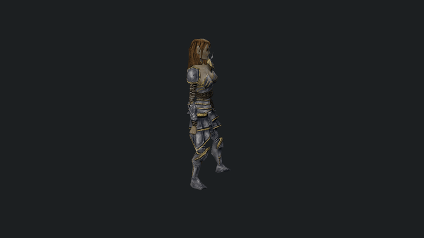

mudl
mudl is a model viewer and headless capture tool for NWN assets plus glTF 2.0 / PBR content, including skinned and animated glTF playback.
It is the main tooling consumer of nw::render
and its lib/nw/render/viewer preview layer. mudl drives real renderer
paths against real assets; reusable renderer protocols stay in nw::render,
with nw::gfx underneath as the low-level graphics API boundary.
It is useful for: - interactive model inspection - quick asset stats and hierarchy inspection - deterministic screenshot capture - deterministic turntable frame generation for downstream tooling

Quickstart
Build instructions live in the root README.
# Launch the interactive viewer
mudl
# Open a stock NWN model
mudl c_aribeth
# Open a glTF asset
mudl ./tests/test_data/renderer/DamagedHelmet/glTF-Binary/DamagedHelmet.glb
# Inspect model stats
mudl stats c_aribeth
# Print the viewer load report as JSON
mudl report c_halaster
# Headless screenshot
mudl screenshot c_aribeth ./out/c_aribeth.png
# Headless turntable image sequence
mudl turntable c_aribeth 36 --output ./out/c_aribeth
# Without --output, frames go to ./c_aribeth-turntable/
# Print the full command list
mudl help
Common flags
Most commands accept these:
--module <path>: load a module container (.mod, module directory, or zip) before resolving resources. Use this when the model, textures, or override assets live inside a specific module.--user <path>: use an explicit NWN user directory root for development/override resources. CI should use--user ./tests/test_data/user.--animation <name>: override the default animation for interactive/headless model previews.--pbr-environment <ktx>: select the HDR KTX source used by the static PBRreference_iblpolicy.--no-pbr-ibl: skip generated static PBR IBL textures and use shader fallback lighting.--dangly-scale <value>: exaggerate or reduce dangly motion for tuning.--dangly-mode legacy|modern: choose the dangly simulation mode.--validate: enable Vulkan validation layers.--debug: enable the optional debug grid overlay.
Command-specific flags are listed inline below.
Commands
Interactive viewer
mudl [<resref>]
mudl <path/to/model.gltf|model.glb>
mudl view [<resref>|model.gltf|model.glb|effect.json]
mudl creature <resref>
mudl item <resref>
mudl area <resref>
mudl view also opens a native particle asset directly when the input is a JSON file with "$type": "ParticleEffect" — this is the source-neutral authoring path for particle work.
mudl
mudl c_aribeth
mudl view c_aribeth
mudl view ./tests/test_data/user/development/particle_basic.json
# Static or skinned glTF / glb preview
mudl ./tests/test_data/renderer/DamagedHelmet/glTF-Binary/DamagedHelmet.glb
mudl ./tests/test_data/renderer/CesiumMan/glTF-Binary/CesiumMan.glb
mudl ./tests/test_data/renderer/MetalRoughSpheres/glTF-Binary/MetalRoughSpheres.glb
# Creature and item previews
mudl creature c_aribeth --animation pause1
mudl item nw_it_mpotion001
# Interactive area viewer
mudl area ttr01
Headless capture
mudl screenshot <resref> <path>
mudl turntable <resref> [frames] [--output <dir>]
mudl frames <count> [<resref>]
mudl area-screenshot <resref> <path>
mudl area-benchmark <resref> [--camera fit|gameplay|custom] [--camera-position x,y,z] [--camera-target x,y,z] [--visible-tile-radius <tiles>] [--no-local-shadows] [--no-forward-plus] [--forward-plus-gpu-cull] [--no-forward-plus-gpu-cull] [--forward-plus-auto-config] [--forward-plus-config tile,depth[,max]] [--forward-plus-debug off|cluster-lights|depth-slices] [--screenshot <path>]
mudl area-sweep <resref|area-list.txt> [--frames <count>] [--warmup <count>] [--variants minimal|default|all] [--no-local-shadows] [--no-forward-plus] [--forward-plus-gpu-cull] [--no-forward-plus-gpu-cull] [--forward-plus-auto-config] [--forward-plus-config tile,depth[,max]] [--forward-plus-debug off|cluster-lights|depth-slices] [--validate] [--json <path>]
mudl area --dump <module-path> [--output <path>] [--skip-existing] [--limit <n>]
Forward+ is enabled by default for local lights. Use --no-forward-plus only for
fallback or comparison captures. GPU gather is the default Forward+ path;
--no-forward-plus-gpu-cull forces the CPU reference path for parity runs.
# Single headless screenshot
mudl screenshot c_aribeth ./out/c_aribeth.png
# Turntable image sequence
mudl turntable c_aribeth 36 --output ./out/c_aribeth
# Defaults to ./c_aribeth-turntable/ when --output is omitted
# Render a fixed number of frames
mudl frames 36 c_aribeth
# Headless area screenshot
mudl area-screenshot ttr01 ./out/ttr01.png
# Headless area render benchmark from a gameplay-style camera
mudl area-benchmark ms_4city --camera gameplay --json ./out/ms_4city.json
# Compare the same fixed camera without local-light shadow maps
mudl area-benchmark ms_4city --camera gameplay --no-local-shadows --json ./out/ms_4city-no-local-shadows.json
# Simulate a game/PVS visibility mask around the camera tile
mudl area-benchmark ms_4city --camera gameplay --visible-tile-radius 2 --json ./out/ms_4city-near.json
# Capture a Forward+ cluster light-count heatmap after the benchmark
mudl area-benchmark ms_4city --camera gameplay --forward-plus-debug cluster-lights --screenshot ./out/ms_4city-fplus.png --json ./out/ms_4city-fplus.json
# Run the GPU Forward+ gather path explicitly for CPU/GPU parity captures
mudl area-benchmark ms_4city --camera gameplay --forward-plus-gpu-cull --forward-plus-debug cluster-lights --json ./out/ms_4city-fplus-gpu.json
# Compare a fixed Forward+ cluster layout against the automatic area config
mudl area-benchmark ms_4city --camera gameplay --forward-plus-config 32,4,64 --json ./out/ms_4city-fplus-fixed.json
# Run a validation sweep over area renderer variants
mudl area-sweep ms_4city --module ../the_awakening --frames 1 --variants default --validate --json ./out/ms_4city-sweep.json
# Run validation plus an area benchmark matrix and summary report
tools/mudl/area_benchmark_baseline.py ms_4city --module ../the_awakening --out-dir ./out/ms_4city-baseline --quiet
# Dump every area in a module to screenshots
mudl area --dump ./mymodule.mod --output ./out/areas --skip-existing --limit 50 --debug
Inspection
mudl stats <resref>
mudl report <resref|path>
mudl dump <resref> [--output <dir>]
mudl texture <resref> <path>
mudl stats c_aribeth
mudl report c_halaster
mudl report ./shared/blueprints/creatures/pl_bernard.utc.json --module ./mymodule.mod
mudl dump c_aribeth --output ./out/c_aribeth-assets
mudl stats c_aribeth --module ./mymodule.mod
mudl texture plc_archtarg plc_archtarg_d.png
mudl report resolves the NWN preview dependency graph without starting the renderer and writes the load report to stdout as JSON. It includes the preview source and kind, loaded model names, referenced resources, missing resources with model/node origins, particle emitter counts, particle caps, and report events. Supermodels are reported as MDL dependencies, but their mesh textures/materials are not treated as loaded preview resources. Redirect stdout to capture it cleanly:
mudl report c_halaster > ./out/c_halaster-report.json
mudl dump writes a self-contained resource closure for a model preview, including the model,
supermodels, reference models, mesh/emitter/light textures, TXI files, MTR files, and texture
references found inside TXI/MTR text. A manifest.json records copied and missing resources plus
the model node or secondary file that referenced each asset.
Spells and VFX
mudl spell <spells.2da rowid>
mudl spell-export <spells.2da rowid> <path>
mudl spell-export-live <spells.2da rowid> <path>
mudl spell-preview-live <spells.2da rowid> <path> [--frame <count>] [--view front|top|side] [--metadata]
mudl vfx <spell|resref|VFX_*|effect.json> [--stage proj|cast|conj|impact|duration|cessation]
mudl spell 115
mudl spell-export 115 ./out/spell115.json
mudl spell-export-live 115 ./out/spell115-live.json
mudl spell-preview-live 115 ./out/spell115-preview.png --frame 24 --metadata
mudl vfx VFX_IMP_MIRV
mudl vfx Fireball --stage impact
mudl vfx ./tests/test_data/user/development/particle_basic.json
Particles
mudl particle-preview <mdl-path|resref> <out.png> [--time <seconds>] [--view front|top|side] [--metadata]
mudl particle-preview-frames <mdl-path|resref> <out-dir> [--duration <seconds>] [--fps <n>] [--view front|top|side] [--metadata]
mudl particle-export <mdl-path|resref> <effect.json>
--metadata writes JSON companion files with emitter/kernel/warning state. particle-preview writes a sibling .json next to the PNG; particle-preview-frames writes preview.json plus one .json per numbered frame.
# Preview from a local MDL file
mudl particle-preview ./tests/test_data/user/development/vfx_lightning_test.mdl ./out/lightning.png --time 0.25 --metadata
# Preview from an NWN model resref
mudl particle-preview c_mindflayer ./out/c_mindflayer-particles.png --time 1.0 --view front --animation cspecial
# Frame sequence
mudl particle-preview-frames it_torch_000 ./out/torch-particles --duration 1.5 --fps 24 --view front --metadata
# Export an NWN particle effect into the native particle JSON format
mudl particle-export it_torch_000 ./out/it_torch_000.json
Visual corpus and smoke tests
mudl corpus <corpus.json> [--output <dir>] [--user <path>] [--pbr-environment <ktx>] [--no-pbr-ibl] [--limit <n>] [--filter <tag>] [--ledger <path>]
mudl nwn-animation-smoke [--user <path>]
mudl compute-smoke
# Run a checked-in corpus and collect per-entry outputs
mudl corpus ./tests/test_data/user/development/spell_corpus.json \
--user ./tests/test_data/user \
--output ./tmp/visual-audit/spells
# Run a corpus and update the checked-in visual audit ledger
mudl corpus ./tests/test_data/user/development/creature_corpus.json \
--user ./tests/test_data/user \
--output ./tmp/visual-audit/creatures \
--ledger ./tests/test_data/user/development/visual_audit_ledger.json
# Run the checked-in DockerDemo area corpus through the test user directory
mudl corpus ./tests/test_data/user/development/area_corpus.json \
--module ./tests/test_data/user/modules/DockerDemo.mod \
--user ./tests/test_data/user \
--output ./tmp/visual-audit/areas
# Run the Stage 2 PBR convergence baseline with static PBR reference IBL enabled
mudl corpus ./tests/test_data/user/development/pbr_corpus.json \
--module ./tests/test_data/user/modules/DockerDemo.mod \
--user ./tests/test_data/user \
--output ./tmp/visual-audit/pbr \
--ledger ./tests/test_data/user/development/visual_audit_ledger.json
# Renderer smoke test
mudl compute-smoke --validate
mudl corpus --ledger <path> updates a persistent audit ledger from the current run while preserving human review fields such as ownership, issue linkage, disposition, and review notes.
Viewer corpus entries may include a camera object when auto-fit is not a useful
diagnostic frame. Supported modes are orbit, free, and area_gameplay.
Use three-number arrays for position and target; orbit also requires a
positive radius plus optional yaw, pitch, and fov.
Static PBR corpus entries may include a static_pbr_environment object to pin
their reference lighting independently of the command line:
"static_pbr_environment": {
"environment_path": "tests/test_data/renderer/MetalRoughSpheres/glTF/papermill.ktx",
"ibl_requested": true
}
Both fields are optional. Missing fields inherit --pbr-environment and
--no-pbr-ibl; malformed paths or non-boolean ibl_requested values fail the
corpus load.
Checked-in corpora: - particle_corpus.json — canonical list of representative NWN particle models, required animations, and behavior classes when validating importer/runtime/render changes - spell_corpus.json - creature_corpus.json - item_corpus.json - model_corpus.json - pbr_corpus.json — focused Stage 2 PBR baseline covering glTF metal/roughness, NWN metal/specular fixtures, PLT/equipment, water-textured geometry, and an area local-light case - area_corpus.json - visual_audit_ledger.json
NWN MDL import gets you close, and native particle JSON gives you something clean to tune from there:
mudl view ./tests/test_data/user/development/particle_basic.json
Output
mudl stops at deterministic frame generation. It does not own GIF or video encoding — that belongs in external tools like ffmpeg or build scripts that consume the generated PNGs.
# Generate a 36-frame turntable sequence
mudl turntable c_aribeth 36 --output ./out/c_aribeth
# Or omit --output to write ./c_aribeth-turntable/%04d.png
# GIF via ffmpeg
ffmpeg -framerate 12 -i ./out/c_aribeth/%04d.png -vf palettegen ./out/c_aribeth-palette.png
ffmpeg -framerate 12 -i ./out/c_aribeth/%04d.png -i ./out/c_aribeth-palette.png -lavfi paletteuse ./out/c_aribeth.gif
# MP4 via ffmpeg
ffmpeg -framerate 12 -i ./out/c_aribeth/%04d.png -pix_fmt yuv420p ./out/c_aribeth.mp4
Viewer Controls
General viewer
Left-drag: orbitMiddle-drag: panMouse wheel: zoomF: frame model to boundsW/SorUp/Down: pitch orbitA/DorLeft/Right: yaw orbitQ/E: zoom out / inP: pause / resume the whole scene.: step the whole scene by 33 ms/: reset the whole sceneF5: reload shaders and rebuild render pipelinesTab: cycle glTF animation clips[/]: scrub glTF animation time when an animated glTF is loadedSpace: toggle autoplay for the active subsystemJ/K: decrease / increase static PBR IBL strengthN/M: decrease / increase static PBR exposureShift: faster keyboard stepEsc: exit viewer
Area viewer
Left-drag: free-look yaw / pitchMiddle-drag: panMouse wheel: move forward / backward in perspective, zoom in orthographic overviewF: frame area to boundsW/S: move forward / backwardA/D: move left / rightLeft/Right: yawUp/Down: move up / downCtrl+Up/Down: pitchQ/E: zoom out / inShift: faster keyboard stepEsc: exit viewer
Area lighting
These controls apply to exterior area previews with day_night_cycle enabled.
Space: toggle day/night autoplay[/]: scrub backward / forward through time of day\: reset the cycle to the area's authored starting phaseG: toggle authored area fog on / offH: toggle shadow cascade debug view
Spell / VFX
Space: toggle sequence autoplayP: pause / resume the whole scene.: step the scene by 33 ms/: reset the scene to time 0- Debug panel support includes:
Sequence timescrubbing, active-step inspection, per-step source / target metadata, and emitter isolation controls such asOnly ring/Hide ring
Features
- bindless sampled-texture rendering path
- per-draw uniform suballocation
- static and skinned mesh rendering paths
- static glTF 2.0 / PBR render path
- bind-pose skinned glTF render path
- glTF animation clip import and playback
- animated glTF playback now prefers the
Ozzbackend with a custom runtime fallback - 3-point studio lighting for model and interior previews
- world-space exterior area lighting driven by area weather metadata
- smooth accelerated 45 second exterior day/night preview cycle
- cascaded directional shadows for area lighting
- camera auto-fit to world-space bounds
- interactive orbit/pan/zoom viewer controls
- unified scene pause / stop / reset / single-step controls
- spell and VFX sequence playback, export, and live preview tooling
- typed
progfxlowering for programmable FX work inmudl - interactive area navigation and lighting time controls
- headless screenshot capture
- headless area render benchmarks with deterministic overview, gameplay, or custom cameras
- Forward+ policy controls and cluster heatmap screenshots from the area benchmark path
- headless turntable frame output
- model hierarchy, geometry, and texture stats
Reference
Lighting notes
- Exterior areas use a stable world-space outdoor lighting rig instead of camera-relative studio lighting.
- Interior areas keep the viewer's studio-style lighting.
- Exterior areas with
day_night_cycleenabled run through a full 45 second preview loop. - Outdoor lighting uses authored
.aresun/moon ambient and diffuse colors when present, with viewer fallbacks for missing or unusable values. - Static PBR previews use the
reference_iblpolicy and split-sum IBL with: - HDR environment input
- diffuse irradiance
- GGX-prefiltered specular environment mips
- BRDF LUT integration
- NWN models and areas use the
scene_authoredpolicy: area weather, wind, water, fog, and day/night lighting drive the scene instead of generated IBL. - Static PBR previews expose viewer dials for the reference IBL path:
J/K: decrease / increase static PBR IBL strengthN/M: decrease / increase static PBR exposure- The default static PBR reference environment is
tests/test_data/renderer/MetalRoughSpheres/glTF/papermill.ktx; override it with--pbr-environment <ktx>for reproducible comparisons against another lighting source. Use--no-pbr-iblfor faster tool runs that do not need generated environment lighting.
glTF notes
mudlcurrently supports static.gltf/.glb, skinned glTF rendering, and imported glTF animation playback.- The v1 static glTF path flattens node transforms into per-primitive world transforms.
- The current skinned glTF path retains the minimum node/skin data needed for bind-pose skinning and animation playback.
- The current animated glTF path runs through the renderer-owned animation runtime and prefers the
Ozzbackend for sampling. - Current material support is focused on:
- base color
- normal
- metallic-roughness
- emissive
- occlusion merged into the runtime ORM/surface texture at import time
- Current non-goals for the glTF path:
- morph targets
- exact Khronos Sample Viewer parity
Regression set
Current graphics regression models:
c_aribeth: dumped NWN humanoid character baselinec_drgshad: dumped NWN skinned creature with wing skinningit_torch_000: dumped NWN placeable with emittersttd01_a04_03: dumped NWN tile with static meshes, lights, and an aabb nodeDamagedHelmet.glb: static glTF / PBR baselineCesiumMan.glb: skinned glTF bind-pose baselineMetalRoughSpheres.glb: glTF metallic/roughness material baseline
The dumped NWN fixtures live under tests/test_data/renderer/nwn_dump_user.
Use that directory as the explicit NWN user root so the model, texture, and
TXI bytes are served from committed test data while the install root only
provides bootstrap rules and base tables.
Suggested checks:
mudl stats c_aribeth --user ./tests/test_data/renderer/nwn_dump_user
mudl stats c_drgshad --user ./tests/test_data/renderer/nwn_dump_user
mudl stats it_torch_000 --user ./tests/test_data/renderer/nwn_dump_user
mudl stats ttd01_a04_03 --user ./tests/test_data/renderer/nwn_dump_user
mudl screenshot c_drgshad ./out/c_drgshad.png --user ./tests/test_data/renderer/nwn_dump_user
mudl screenshot it_torch_000 ./out/it_torch_000.png --user ./tests/test_data/renderer/nwn_dump_user
mudl screenshot ttd01_a04_03 ./out/ttd01_a04_03.png --user ./tests/test_data/renderer/nwn_dump_user
mudl ./tests/test_data/renderer/DamagedHelmet/glTF-Binary/DamagedHelmet.glb
mudl ./tests/test_data/renderer/CesiumMan/glTF-Binary/CesiumMan.glb
mudl ./tests/test_data/renderer/MetalRoughSpheres/glTF-Binary/MetalRoughSpheres.glb
Design notes
mudlis a consumer ofnw::renderandlib/nw/render/viewer, not a renderer framework.- Headless capture is built in because it is part of rendering validation.
- Encoding stays outside the tool —
mudlproduces PNGs;ffmpegand friends turn those into GIFs or videos. - NWN assets still come first, but glTF / PBR is now the primary modern material path for renderer validation.
- Longer-term NWN1 preview/model compatibility notes live with the reusable renderer docs, especially NWN model conversion and the NWN emitter map, not under the
mudlapp.